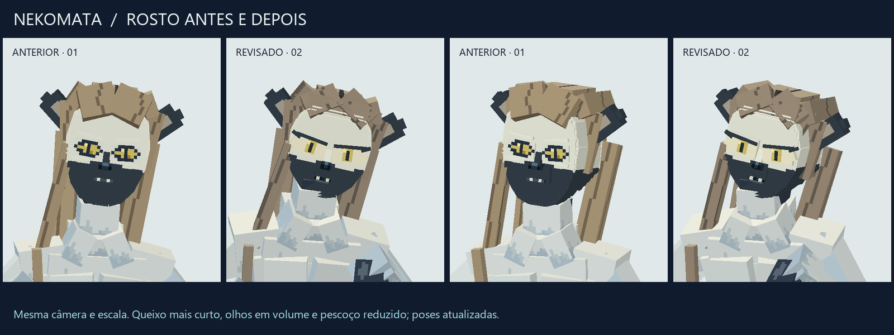
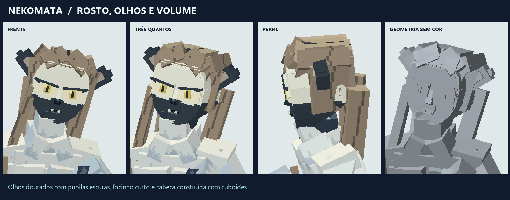
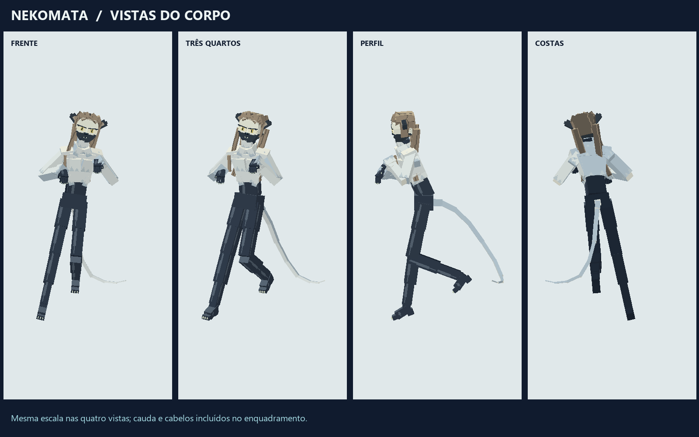
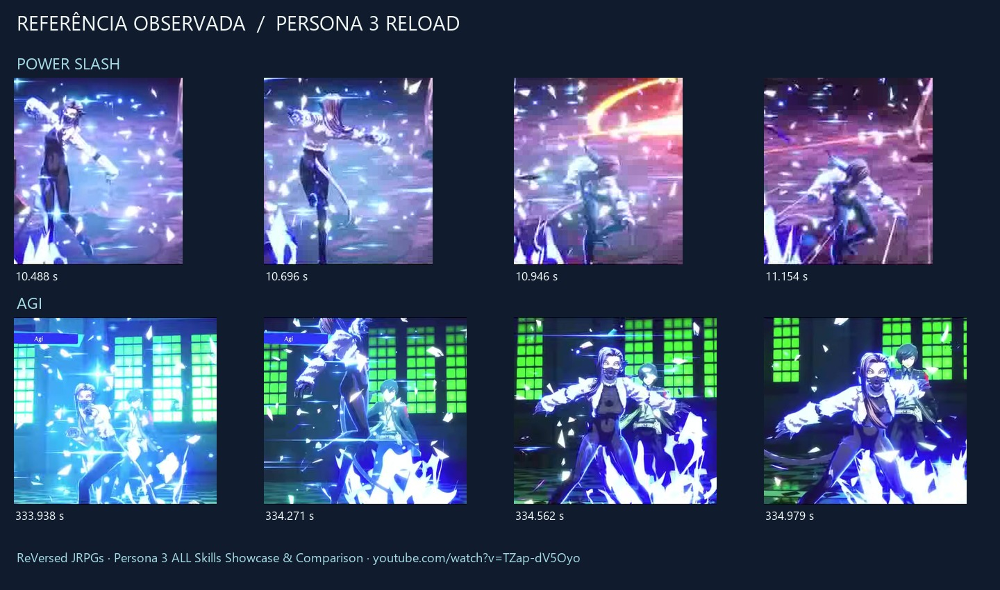
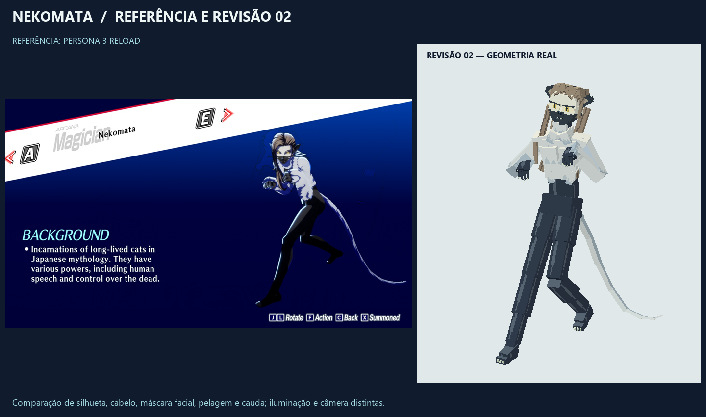

Tronco inclinado, mãos recolhidas e perna flexionada. A postura tem referência; o período do ciclo ainda é aproximado.
Ver GIFTronco inclinado, mãos recolhidas e perna flexionada. A postura tem referência; o período do ciclo ainda é aproximado.
Ver GIFSubida, abertura dos braços, giro com varredura da garra e conclusão baixa.
Ver GIF · Examinar posesElevação, volta completa e conclusão com braço direito aberto e mão esquerda perto do rosto.
Ver GIF · Examinar posesOs ataques são reconstruções manuais dos movimentos observados. A recuperação após a invocação desaparecer no jogo foi adaptada para voltar ao idle. Ainda falta um vídeo mostrando o loop completo do repouso para confirmar sua cadência.

Queixo mais curto, contorno oval mais cheio, nariz ligado ao rosto e pescoço reduzido. Esclera, íris, pupilas, reflexos e pálpebras são volumes separados. A máscara felina e as pequenas presas foram preservadas.


Persona 3 ALL Skills Showcase & Comparison | Portable Vs Reload, de ReVersed JRPGs: Nekomata usa Power Slash em 0:10 e Agi em 5:33. Foram usados os trechos de Reload, não as animações de Portable intercaladas no vídeo.


| Modelo | 266 cuboides · 47 ossos · Box UV · grade 8× · atlas 1024 × 1024. |
|---|---|
| Articulações | 243 poses e 34 pares com contato. Giros completos preservados e retorno ao repouso verificado. |
| Leitura nativa | GeckoLib carregou modelo e três animações. Conversão de eixos e escala para integração ainda não aplicada. |
| Preservação | 4.501 arquivos do mod conferidos por hash. Nenhum novo JAR, instalação, commit ou publicação. |
Geometria e poses · GeckoLib · Mídias · Regras locais · Cobblemon
O teste cobre os pares declarados, não todas as interseções possíveis. As imagens são renders dos recursos reais; não são capturas dentro do Minecraft. A aprovação visual continua pendente.